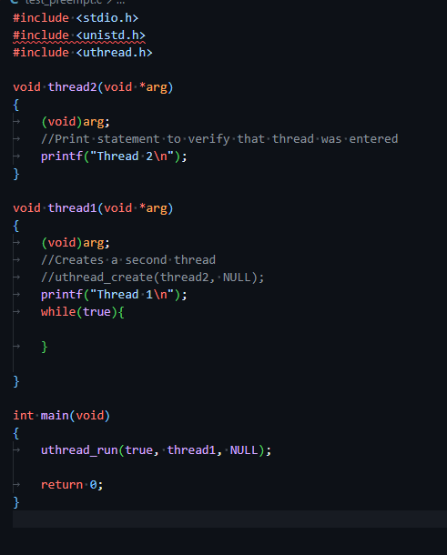
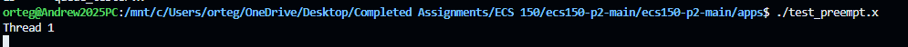
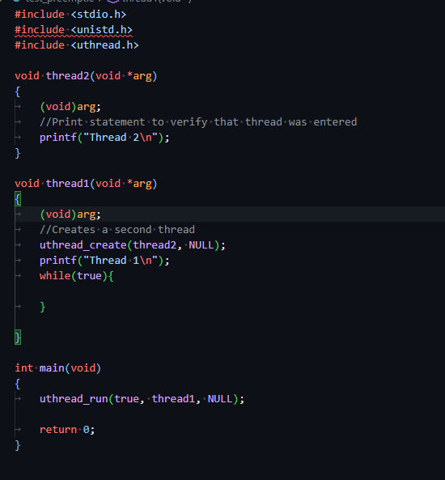
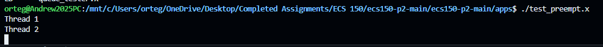

Key Features
- User-level thread creation and scheduling
- Preemptive multitasking using timer interrupts
- Semaphore-based synchronization
- Custom queue for managing ready and blocked threads
- Thread context switching with independent stacks
I implemented a user-level threading library in C that enables concurrent execution of multiple threads within a single process. The system supports preemptive scheduling, synchronization through semaphores, and context switching using custom thread control structures.
This project deepened my understanding of concurrency, scheduling, and synchronization. I gained hands-on experience with race conditions, context switching, and how operating systems manage thread execution at a low level.
Each thread is represented by a thread control block (TCB) containing execution context and stack information. Threads are scheduled from a ready queue and can yield or be preempted.
Preemption is implemented using a timer and signal handler that forces threads to yield periodically, preventing any single thread from monopolizing CPU time.
A semaphore API controls access to shared resources, preventing race conditions by blocking and waking threads in a controlled order.
A custom queue implemented as a doubly linked list stores ready and blocked threads, enabling efficient insertion and removal operations.
Managing correct context switching while handling asynchronous preemption was a key challenge. Ensuring thread safety while modifying shared structures required careful coordination and disabling interrupts in critical sections.
I validated preemptive scheduling by comparing a baseline infinite-loop case against a preemption-enabled case. Without preemption, execution remains stuck in a single thread. With preemption, timer interrupts force context switches, allowing other threads to run.
Execution is stuck in Thread 1 due to the infinite loop.


Thread 2 executes despite Thread 1 looping, proving successful preemptive scheduling.


This behavior mirrors how operating systems enforce fairness by interrupting long-running tasks and scheduling other threads.
Source code is available upon request due to academic collaboration constraints. The library was tested through custom test cases and provided validation programs to ensure correctness across all APIs.